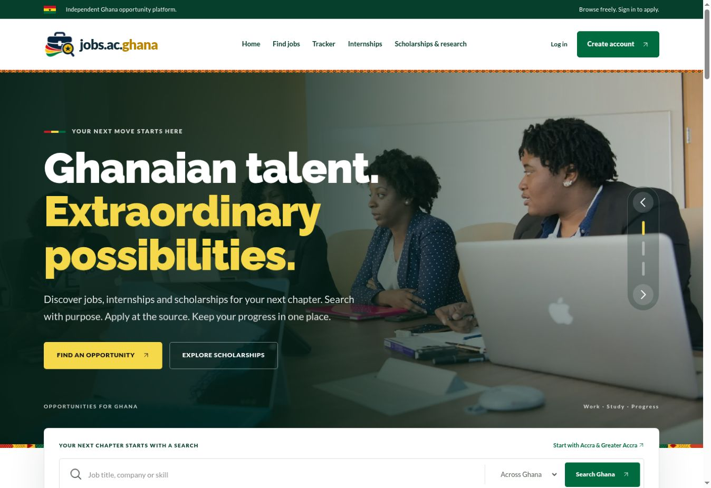

ACTUAL PRODUCT · OCTOBER 2026FEATURED BUILD / LIVE PRODUCT
ZagJobSearchNow jobs.ac.ghana
A Ghana-focused opportunity platform that brings job listings, internships, scholarships and research funding together, with a private application tracker.
I built the frontend, API and database integration, then improved account security, listing freshness, source retries, cookies and search discovery as the product developed.
- Separate categories and filters across Ghana’s 16 regions.
- Account-gated Apply, with applications completed at the original source.
- Saved applications, status updates, notes and follow-up dates.
- Automated source checks, deadline handling and visible coverage limits.